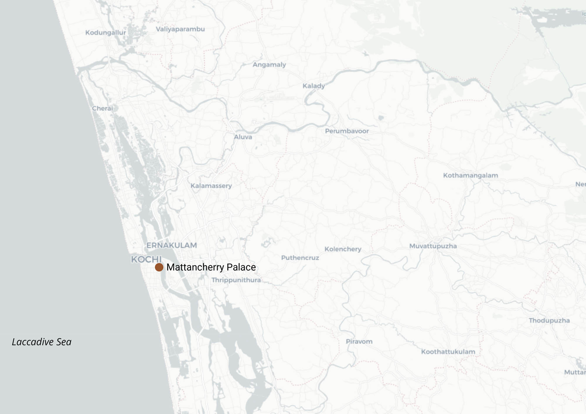

In Kochi, historic mural paintings can be found on the walls of several religious and built heritage sites. Mattancherry Palace, a heritage monument centrally protected by the Archaeological Survey of India (ASI) (Source: List of Centrally Protected Monuments / Sites under the jurisdiction of Kerala (Thrissur Circle)), houses impressive murals, including those depicting the Ramayana. There are also murals on the outer walls of the sanctum sanctorum at temples such as the Pazhoor Perumthrikovil Mahadeva temple, the Thirunayathode Sivanararayana temple, and the Piravom temple, all protected by the State Archaeology Department of the Government of Kerala (Source: Protected Monuments, Department of Department of Archaeology ).
However, there are several other murals not listed as heritage by either the ASI or Kerala’s State Archaeology Department, at temples such as the Cheranalloor Bhagavati temple, Ramamangalam temple, and Paliyam Krishna temple, and at churches such as St. Mary’s Jacobite church and St Mary's Catholic church, to name a few.
Kadavil Thrikkovil at Udayamperoor, a small temple with Lord Krishna as its main deity, is one such location with murals dating back to 1782, though it is not formally listed as a heritage site.

{kind=link}